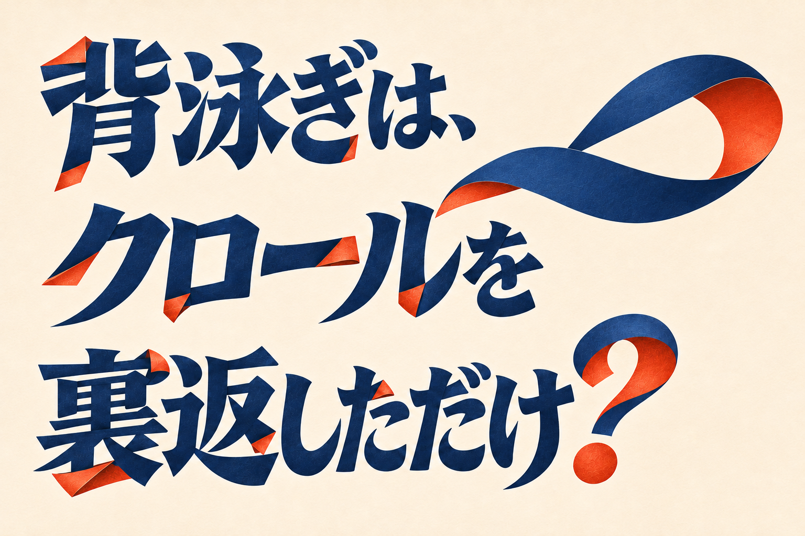
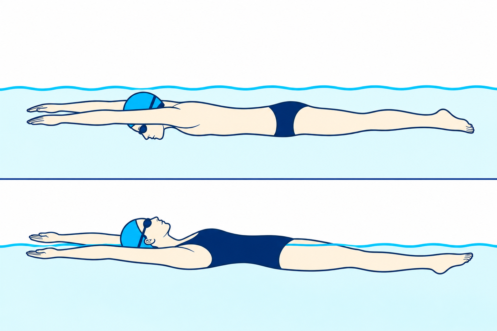
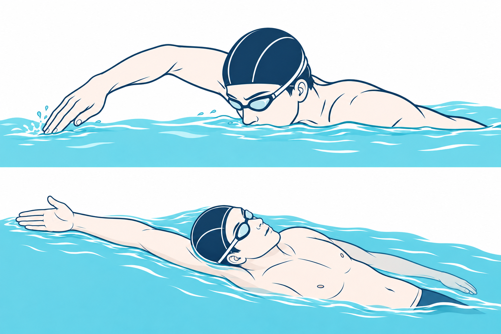
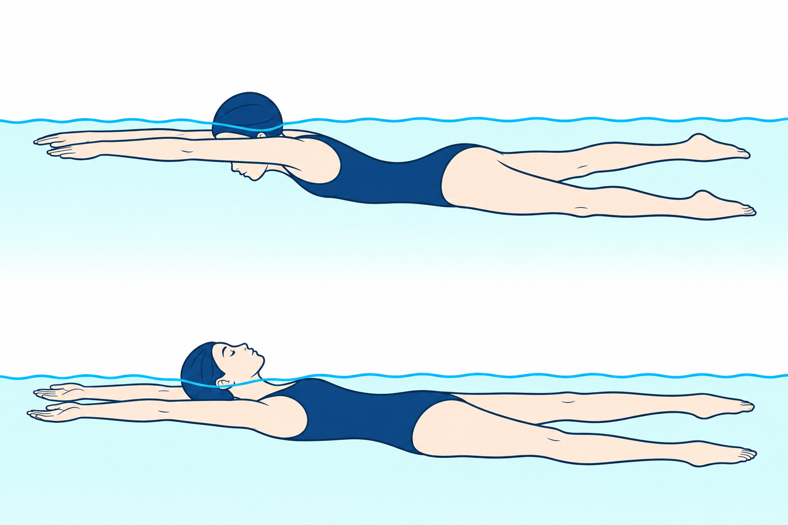
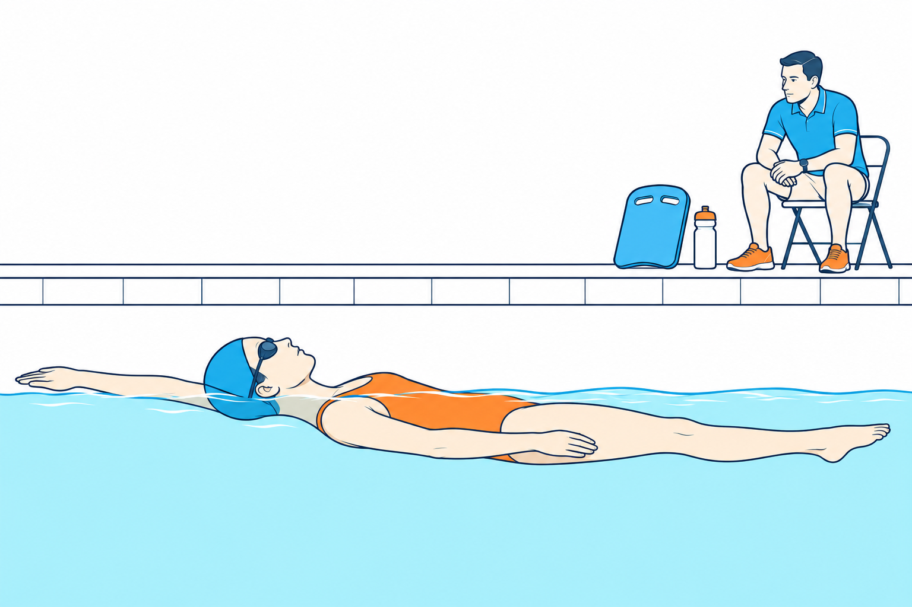

SWIMMING RESEARCH / 21
背泳ぎは、クロールを裏返しただけ？
姿勢、手の入り口、キックの向き
2026年11月11日 公開

クロールで水をかき、くるりと仰向けになる。背泳ぎでも、左右の腕は交代し、脚は交互に動きます。似ているのに、手を水に入れる向きや、足が水面に近づくときの感じは変わります。どこまで同じで、どこから違うのでしょう。
答えは、左右が交代するところは似ていますが、身体を裏返すだけで、手や足の動きが全部同じになるわけではありません。 まず身体の表裏を見比べ、次に手が水に触れるところ、最後に足先の向きを見ます。向きの言葉がそろうと、「上へ」という合図が何を指すのかも分かりやすくなります。
1｜裏返っても、左右が交代する
クロールは胸やお腹をプールの底へ向け、背泳ぎは胸やお腹を水面のほうへ向けて進みます。どちらも、右手と左手が順番に水へ入り、左右の脚が交互に動きます。片方の腕が水の中にある間、もう片方は次に入る場所へ戻っていきます。
泳ぐときは、どちらの泳ぎでも肩や腰の左右の高さが少しずつ入れ替わります。身体を頭から足へ貫く線を思い浮かべ、その線のまわりで肩や腰が傾く動きが「ロール」です。顔と胸の向きを比べる図では動きを簡単にするため身体を平らに描きます。実際の背泳ぎで肩まで水平に固める必要はありません。
共通点は左右の交代。変わるのは身体の向き

胸を底側へ。右と左の腕・脚が交代。
胸を水面側へ。右と左の腕・脚が交代。
見るところ顔と胸が水面・底のどちらを向いているかを見ます。
練習での使い方一度に全身を直そうとせず、まず姿勢の違いを言葉にします。
図の見る点 同じ進行方向で、胸と顔がどちらを向くかを見ます。図は腕を頭の先へ伸ばした姿勢でそろえています。身体の向きを比べるための模式図で、両腕をそろえたまま泳ぐという意味ではありません。左右が交代する順番は、実際の泳ぎを指導者と見るときに確かめます。姿勢と動きの順番を分けて見ると、混同しにくくなります。
一方、すべての動きが上下そっくりに入れ替わるわけではありません。男子競泳選手10人がそれぞれの泳ぎで50mを全力で泳いだ研究では、同じ手が水に入ってから、次にその手が入るまでの一巡り（一周期）を調べると、肩の最大の傾きはクロールのほうが大きく、腰の最大の傾きは背泳ぎのほうが大きくなりました。これはその選手たちの全力泳での比較です。肩や腰を何度傾ければよいかを決めた研究ではありません。Gonjoら、2020年・全力泳の比較
2｜指先と小指側は、何を指している？
クロールの手が水に入るとき、手の甲や手のひらを平らに水面へ落とす場面を想像する人もいるかもしれません。指導の一例では、進むほうへ指先を向け、指先側から入ります。背泳ぎでは、手のひらが頭の中心線から外を向き、小指側の縁が先に水に触れるよう教える例があります。「小指側の縁」は、手の親指と反対側にある細い側面です。小指だけを突き出して曲げる動きではなく、手全体の向きの話です。U.S. Masters Swimming・クロールの指先・Swim England・背泳ぎの指導教材
手のどこから水に触れるかと、手をどこへ置くかも分けられます。例えば背泳ぎの右腕なら、右肩から頭の先へまっすぐ延ばした線の近くが観察の目印です。頭の真上で右手を左側まで渡すこととは違います。肩が動きにくい人は、届く位置や手の向きを無理に作らず、指導者と確かめてください。U.S. Masters Swimming・背泳ぎの入水位置
どの縁が触れるかと、どこに入るか

クロール指先背泳ぎ
小指側の縁
仰向けの身体を上から見た模式。右肩から頭の先へ延ばした線の近くが目安です。
指先が先に水面に触れる。
小指側のふちが先に水面に触れる。
見るところまず肩から肘・手首・指先へのつながりを見ます。下段は手首だけを折らず、小指側の縁を水面に向けた姿です。
練習での使い方入水の場所と、先に触れる箇所を別々に指導者へ確認します。
図の見る点 肩から肘、手首、指先までのつながりをたどってから、水面に触れる部分を見ます。小指側を下にするために、手首だけを横へ折り曲げるのではありません。下の位置図では、右肩と入水点を見比べます。身体から手へのつながりと、入水する場所を分けて確認します。
水に触れたあと、手は次の動きへ移ります。泳いでいるときの効率や水の抵抗を比べた別の研究では、動作分析に参加した男子競泳選手10人が同じ速さにそろえて二つの泳ぎを行いました。研究者は水上と水中から動きを記録しています。論文に掲載された一人の手首の軌跡例では、手が入ってから、プールに対して後ろへ動き始めるまでの間に、クロールでは底へ向かう動き、背泳ぎでは身体の横へ向かう動きが目立ちました。図の一例で、全員の同じ軌跡を示すものではありません。指のどの縁を先に入れると上達しやすいかを比べた実験でもありません。Gonjoら、2020年・同じ速度での比較、図5
入る瞬間には手の縁を見て、そのあとには手の進む先を見る。時間を分けるだけで、「小指から入れたら、水の中でもずっと小指を先にするの？」という混乱を避けられます。
3｜同じお腹側へ動いても、「上」と「下」が入れ替わる
ここでの「アップキック」は、水の中にある足先が水面へ近づく動きです。「ダウンキック」は、足先がプールの底のほうへ向かう動きです。足先を水の外へ出すことや、どちらかを強く蹴ることを指す言葉ではありません。水面と底を基準に、足先が今どちらに動いたかを呼び分けています。
今度は、身体の向きから見ます。身体を平らにした模式図で、クロールのようにうつ伏せなら、お腹側は底のほうです。背泳ぎのように仰向けなら、お腹側は水面のほうです。だから、同じ「お腹側へ」の矢印を描くと、クロールでは下向き、背泳ぎでは上向きになります。「背中側へ」の矢印はその反対です。
足先が動く方向を二つの基準で見る

お腹側へ動く例は、うつ伏せで ↓、仰向けで ↑。矢印は足先の移動方向です。
お腹側に動くと、プールの底へ向かう。
お腹側に動くと、水面へ向かう。
見るところ足元の矢印は、お腹側へ動かす場面の向きです。水面に対して上下が逆になります。
練習での使い方足首の角度ではなく、足先がどちらへ移動したかを見ます。
図の使い方 まず水面の線を指でたどります。次に、二つの泳ぎでお腹側を探して矢印を見ます。たとえば背泳ぎで足先が水面へ近づく場面は、プールから見ればアップキックで、平らな姿勢を基準にした図ではお腹側です。実際には身体が傾き、膝や足首も動くため、すべての瞬間に同じ線をたどるわけではありません。
水面は同じ場所にある。泳ぐ身体が返ると、上とお腹側の関係が変わる。
交互に上下するという骨格は共通です。ただし、向きの対応だけを見て、どちらの動きが強い、どちらが大きな推進力を出す、と決めることはできません。この図が伝えるのは、見る向きによって動きの呼び方が変わることです。上向きの足を大きく振り上げたり、下向きだけを強く蹴ったりするための図ではありません。
4｜次は、手か足のどちらか一つを見る
背泳ぎを練習するときは、施設のルールに従い、指導者と前方や壁までの距離を確認します。まだ仰向けで落ち着いて浮けない人は、姿勢や呼吸を先に指導者と確かめてください。そのうえで、慣れた無理のない泳ぎの中で、一つだけ観察できます。
手を選ぶなら、指導者に「右手は肩の延長付近から入っている？」と聞きます。指の向きは、まず水に入る前に手を見せてもらうと確認しやすくなります。泳ぎながら自分の手を見ようと頭を持ち上げる必要はありません。
観察する動作を一つ選ぶ

- 1手を選ぶ
右手が右肩の延長付近に入るか。
- 2足を選ぶ
足先は水面と底のどちらへ動くか。
- 3泳いだあと
見えたことを指導者と一言で振り返る。
見るところ指導者が陸から手の動きを見ています。評価点や正解の角度を示す絵ではありません。
練習での使い方手か足の一つを選び、泳いだあとに見えたことを聞きます。
足を選ぶなら、「いまの足先は水面へ向かった？ 底へ向かった？」と、指導者と同じ言葉を使って確かめます。泳ぎ終えてから、見てもらった一場面を聞きます。自分の感じ方と指導者の見え方が違ったときは、どちらを基準に話していたかをそろえます。
図の使い方 「手の入り口」「足先が向かう方向」のうち、次の練習で見る方を一つ選びます。終わったら「右手は右肩の延長付近に入っていた」「足先の上は水面のほう」のように、見つけたことを短い言葉で残します。この手順は観察の提案です。一回の感覚から、正しい形や上達したかどうかを決める必要はありません。
似ている動きを探すと、これまでの泳ぎが手がかりになります。違うところを一つ見つければ、背泳ぎで確かめたいことが具体的になります。「全部を裏返す」より、今日は手の入り口から。
まとめ｜左右の交代は共通。向きと入水を分けて見る
研究の目的 全力泳の論文は身体の回転や腕の動き、同速泳の論文は効率と泳いでいるときに受ける水の抵抗の違いを調べました。
何を比べたか 競泳者がそれぞれの泳法を全力で泳いだときの肩・腰の回転と、別の同速比較での動きです。
何が分かったか 全力泳では身体の長い軸まわりの最大の回転が、肩ではクロール、腰では背泳ぎのほうが大きい結果でした。同速の研究からは、選手一人の入水後の手首の通り道を例として取り上げました。手が水に触れる瞬間と、その後の動きは分けて見ます。
記事の結論 この記事では、両泳法を動作ごとに見比べました。共通する骨格は、左右の腕と脚が交代すること。水面に対する身体の向きが変わると、手が水に入る向きや、お腹側とプールの上下の対応が変わります。
次の練習でできること 手が入る場所か、足先が動く向きのどちらか一つを、指導者と見てみましょう。
参考文献と確認範囲
- Gonjo Tほか（2020）Upper body kinematic differences between maximum front crawl and backstroke swimming. Journal of Biomechanics, 98, 109452. 原著抄録
- Gonjo Tほか（2020）Front Crawl Is More Efficient and Has Smaller Active Drag Than Backstroke Swimming. Frontiers in Bioengineering and Biotechnology, 8, 570657. 原著全文。方法と考察・図5の説明を確認。
- Swim Englandの背泳ぎ指導教材、U.S. Masters Swimmingのクロール指導資料、背泳ぎ指導資料。入水の教え方の例として参照。
研究は選手が泳ぐときの動きを調べています。入水させる指を変えて練習効果を比べた資料ではありません。記事の図は、姿勢、入水位置、足先の向きを説明する模式図です。水の流れや力の大きさ、上達の程度を描いたものではありません。